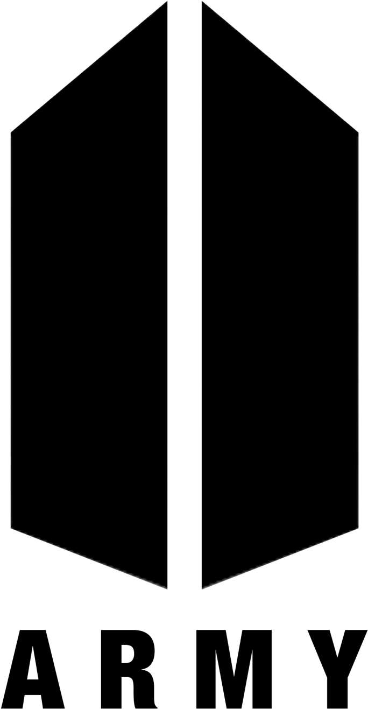
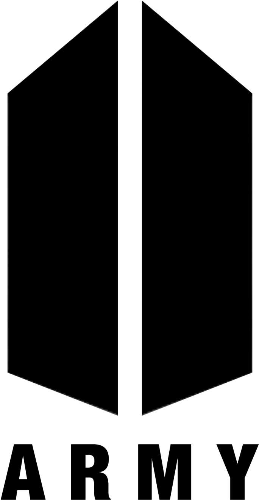

BTS has received many awards and honors, including
24 Mnet Asian Music Awards
23 Melon Music Awards
20 Golden Disc Awards
14 Seoul Music Awards
13 Gaon Chart Music Awards
4 Billboard Music Awards
4 Korean Music Awards
4 American Music Awards
6 MTV Video Music Awards
Having sold over 20.3 million albums on the Gaon Music Chart, BTS are the best-selling artist in South
Korean history,surpassing Shin Seung-hun's record of 17 million albums. In South Korea, BTS hold four
Multi-Million
albums and three Platinum streaming singles. As the first Korean group to receive an RIAA
certification, BTS has one Platinum album, three Platinum singles, two Gold singles, and one Gold album
in the United States.
In Japan, BTS is the first male foreign act to receive a Million certification
for a single; they also have two Multi-Platinum singles, one Multi-Platinum album, one Platinum
album and four Gold albums.
BTS are also the first Korean group to receive certifications in the
United Kingdom, with one Silver single certification for "Boy With Luv" and three Silver album
certifications for Love Yourself: Tear, Love Yourself: Answer and Map of the Soul: Persona.
BTS have a large social influence and as of 2020, have attained
thirteen Guinness World Records,
including the world record for most Twitter engagements.
To date, they have spent
196 weeks at
number
one on the Billboard Social 50 chart.
In October 2018, BTS was awarded a fifth-class Hwagwan Order
of Cultural Merit from the
President
of South Korea for their contributions in spreading Korean culture and language. In 2019, members of BTS
were
invited to become members of the Recording Academy in honor of their contributions to music and as part of a
push to help diversify Grammy Award voters.
On November 7, 2019, BTS became the first K-Pop act to remain on the Billboard 200 for a whole year. "Love
Yourself: Answer" reentered Billboard's main albums chart on Monday November 4 (No. 165), and as of November
2019,
has
remained on the charts for 52 non-consecutive weeks, making it the first and currently only K-pop album to
do
so.
To know the complete list of List_of_awards_and_nominations_received_by_BTS,
CLICK
HERE
To know the BTS's Billboard charts ranking,CLICK
HERE
BTS LOVE MYSELF CAMPAIGN
#LOVEMYSELF
#ENDVIOLENCE
On November 1, 2017 BTS and BigHit Entertainment officially partnered up with the Korean Committee for
UNICEF to sponsor a campaign called #ENDviolence —UNICEF’s global campaign aimed at ensuring children and
teens in the world lead safe and healthy lives without the fear of violence.
Visit the official LOVE MYSELF website,
CLICK
HERE
Generation Unlimited: BTS speak to world's youth
"No matter who you are: speak yourself.”
"No matter who you are, where you are from, your skin color, your gender
identity, just speak yourself.
Find
your name and find your voice by speaking yourself."
- RM, BTS
 
